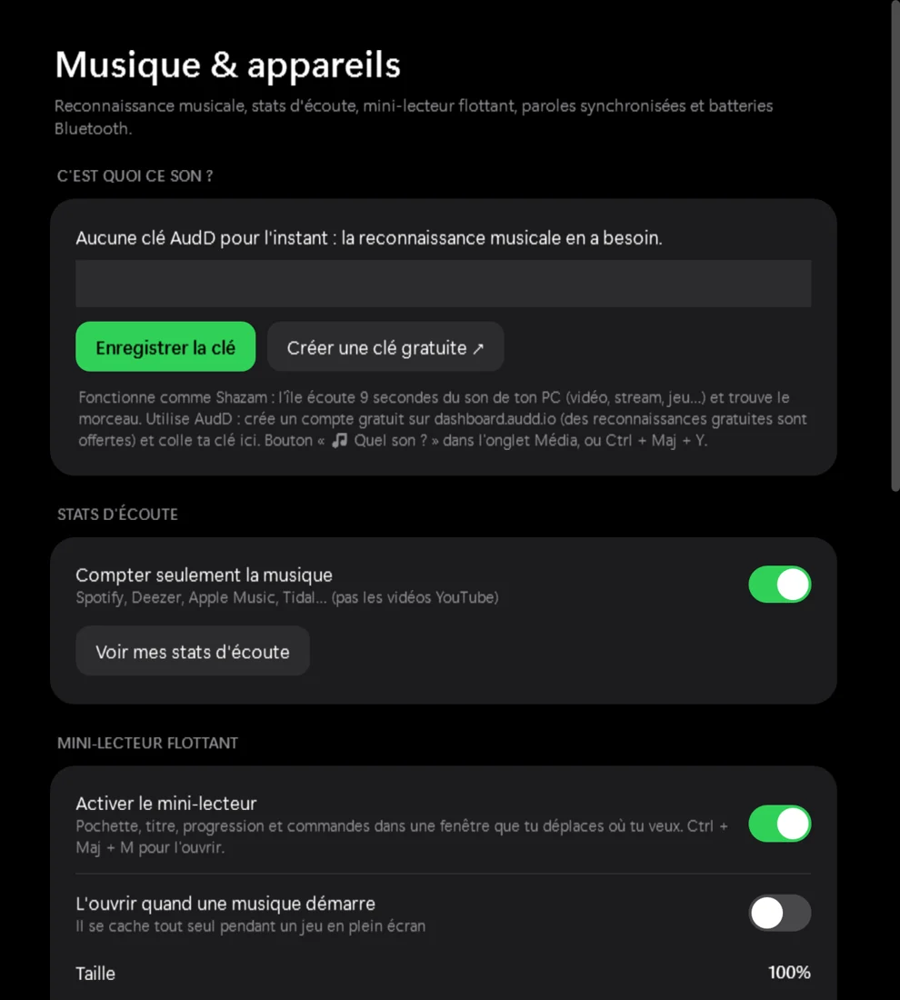
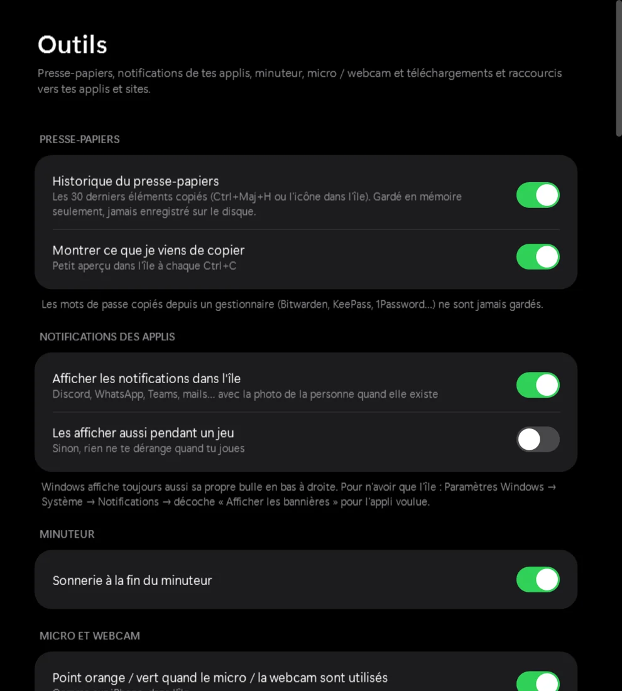

Au quotidien
Ta musique. Tes outils.
Paroles synchronisées, mini-lecteur flottant, reconnaissance musicale, presse-papiers, minuteur et raccourcis.

Musique et appareils
Reconnaissance musicale, stats d'écoute, mini-lecteur, paroles synchronisées et batteries Bluetooth.
Outils rapides
Presse-papiers, notifications de tes applis, minuteur, micro et webcam, téléchargements et raccourcis.
